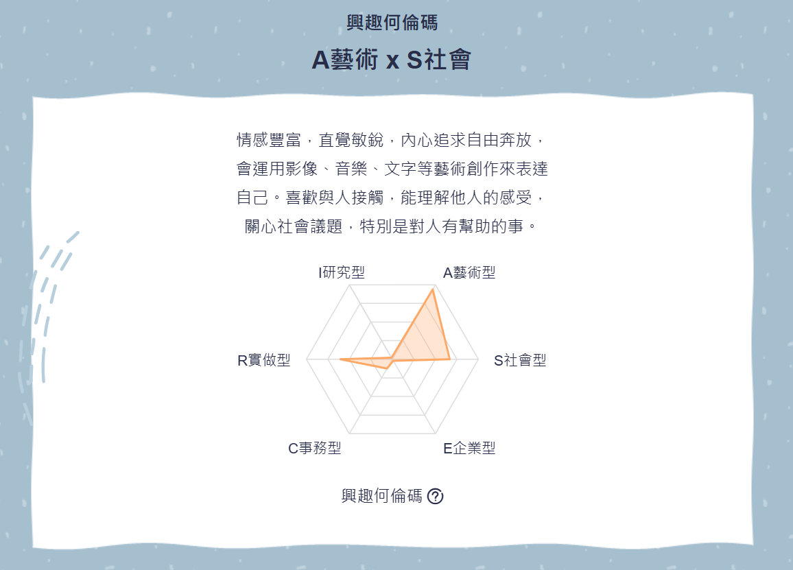
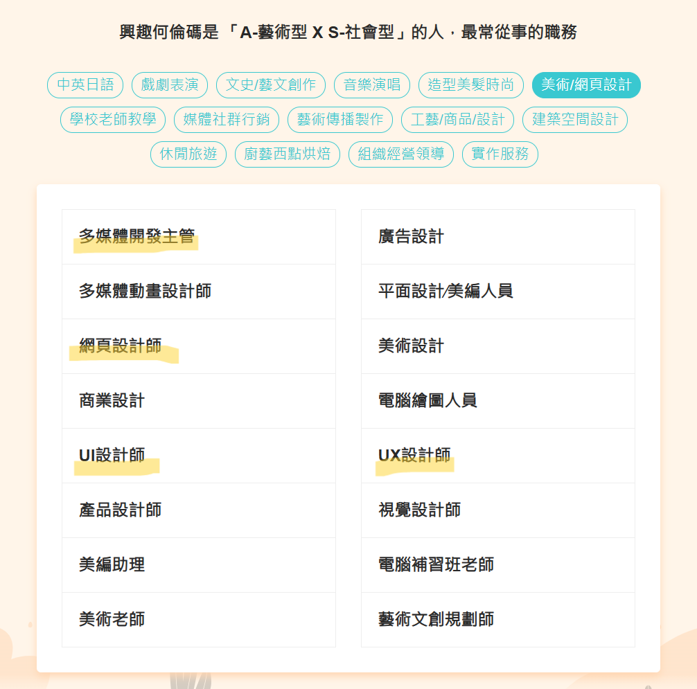

結果分析
我的何倫碼結果為A藝術型 x S社會型
A藝術型：
直覺敏銳、善於表達和創新。他們希望藉由文字、聲音、色彩或形式來表達創造力和美的感受。喜歡獨立作業，但不希望被忽略，在無拘無束的環境下工作效率最好。生活的目的是創造不平凡的事務，不喜歡管人和被人管朋友關係比較隨興。
S社會型：
對人和善，容易相處，他們關心自己和別人的感受，喜歡傾聽和了解別人，也願意付出時間和精力去解決別人的衝突，喜歡教導別人，並幫助他人成長。不愛競爭，喜歡大家一起作事，一起為團體盡力。交友廣闊，關心別人勝於關心工作。

AS型多從事哪些與MIS相關的工作呢?
AS型很適合從事：
網頁設計、使用者體驗（UX）、使用者介面（UI）、多媒體技術應用領域
1. 網頁設計師（Web Designer）
✱ 需要掌握 HTML、CSS、JavaScript，並了解網站架構、使用者體驗與前端技術。
✱ 若涉及後端開發或資料庫應用，則與 MIS 關聯更深。
2. UI 設計師（UI Designer）
✱ 專注於使用者介面的視覺設計，可能需要與前端工程師合作，了解系統需求。
3. UX 設計師（UX Designer）
✱ 研究使用者體驗，優化網站或應用程式的互動設計，可能會使用數據分析來改善設計。
4. 多媒體開發主管
✱ 若負責與資訊系統、應用開發或數位產品相關的多媒體技術，則與 MIS 有關。